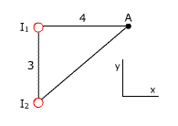
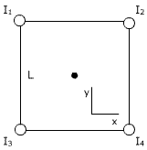
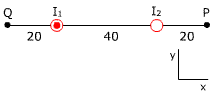

|
Un electrón pasa
por el origen de coordenadas bajando a lo largo del eje z con una velocidad
de 107 m/s. Calcula el campo magnético (Inducción)
en los puntos:
a) (2, 0, 0), b) (0,
2, 0), c) (-2, 0, 0), d) (0, −2, 0), e)
(0, 0, 2) (Distancias en cm) |
Un conductor rectilíneo muy largo colocado
en la dirección del eje OX es recorrido por una intensidad de 10
A en el sentido negativo de dicho eje Calcula el campo magnético
en los puntos:
a) (0, 5, 0), b)
(0, 0, 5), c) (0, -5, 0), d)
(0, 0, -5), e) (0, 3, -4)
(Distancias en cm) |
|
La figura representa dos
cables muy largos perpendiculares al plano de la pantalla recorridos
por corrientes iguales de 12 A.
Siendo d = 10 cm, calcula el campo magnético en los puntos:
A , B ,
C |
|
Por dos conductores rectilíneos
paralelos y de longitud infinita circula en el mismo sentido una corriente
eléctrica de intensidad I. Los conductores se encuentran situados
en el plano z = 0, pasando uno de ellos por el punto (0, -d, 0) y el otro
por el punto (0, d , 0). Calcula el campo magnético creado por
dichas corrientes en el punto P (0, 0, 2d) Datos: d = 2 m, I = 5 A |
 |
La figura representa dos
conductores muy largos, perpendiculares al plano de la pantalla,
por los que circulan corrientes iguales de 10 A. Calcula el campo
magnético en el punto A suponiendo:
a)
I1, I2 hacia adentro
b)
I1 hacia afuera, I2 hacia adentro |
|
 |
La figura representa cuatro
conductores paralelos muy largos por los que circulan corrientes
de igual intensidad I. Calcula el campo magnético en el centro del cuadrado suponiendo:
a) Todas las corrientes hacia afuera
b) I1, I2 hacia
afuera I3, I4 hacia adentro |
|
a) Determina el campo en el centro de una
espira circular de radio 10 cm, colocada en el plano xy, recorrida por
una corriente de 5 A en sentido contrario al de las agujas del reloj
b) Una espira circular de radio 5 cm está colocada en el plano
yz. Determina la corriente que la recorre sabiendo que el campo en su
centro es: B = 1.26·10-4 T (-i) |
|
Dos conductores muy largos,
paralelos y separados 30 cm, están recorridos por corrientes
I1 = 6, I2 = 12 A en el mismo sentido. Determina donde es nulo el
campo magnético |
|

Distancias en cm |
a)
Determina la intensidad de la corriente I2 sabiendo que
I1 son 12 A y que el campo magnético se anula
en P
b) ¿Cuánto
vale el campo magnético en Q? |
|
|
La figura muestra dos cables muy largos
perpendiculares al plano de la pantalla recorridos por intensidades
I1 = 30 A, I2 = 20 A. Siendo
d = 4 cm, calcula el campo magnético en los puntos:
A, B, C |
|
|
La figura representa dos
conductores paralelos muy largos por los que circulan corrientes
de igual intensidad I. Calcula el campo magnético en el punto
A suponiendo:
a) I1, I2 hacia
adentro
b) I1 hacia afuera, I2 hacia adentro |
|
|
Dos conductores muy largos,
paralelos y separados 20 cm, están recorridos por corrientes
I1 = 10, I2 =15 A en sentidos contrarios. Determina donde es nulo
el campo magnético |
|